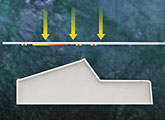
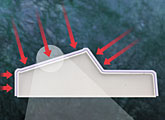
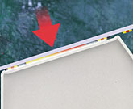

The Key-Tech process
Multi-color,
high resolution images are printed in reverse on flexible
transfer carrier sheets using thermostatic dyes. The
carrier sheet is then precisely registered with the polymer or
polymer coated part. Using heat and pressure, the
image chemically bonds with the polymer substrate. The transfer
machines are simple to use, as easy as operating a standard copying
machine - no skilled labor is involved.
Environmentally
friendly
The process is environmentally friendly. No waste
product is generated and the carrier sheets are recyclable.
It is a dry, one pass process and involves no solvents
or post cleaning of product.
Multi-color
Print unlimited number of colors at the same time, eliminating
any possible problems with color to color registration.
Integral
image
The image becomes a part of the plastic component or polymer coating. It
can therefore be post-formed and the image performs like the part!
Three
dimensional printing
Print flat or formed panels, sheets or molded parts.
Any
finish
Can be used on glossy or matte finishes.
High
yields
Higher yields can be achieved over alternative methods such as screen printing
where multi-passes increase waste.
Reduced
time to market
Rapidly change transfer carrier for different images.
Inventory
reduced
Stock only undecorated product and flexible transfer carriers. Transfer product
as required
Call Key-Tech today: 401-475-5826
|  |
| Step 1 - Printed carrier sheet is located over the part |
|  |
| Step 2 - Heat and pressure are applied |
|  |
| Step 3 - Image bonds with the polymer substrate |